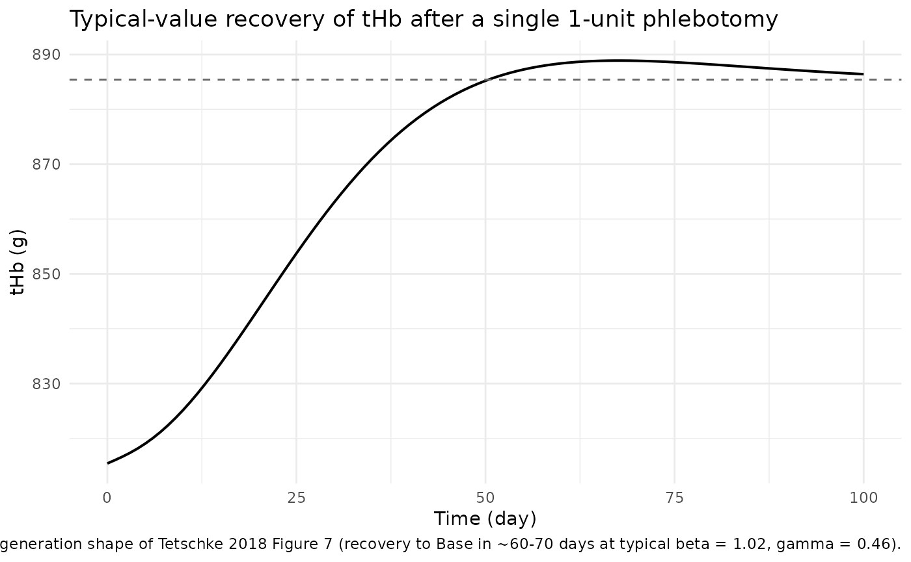
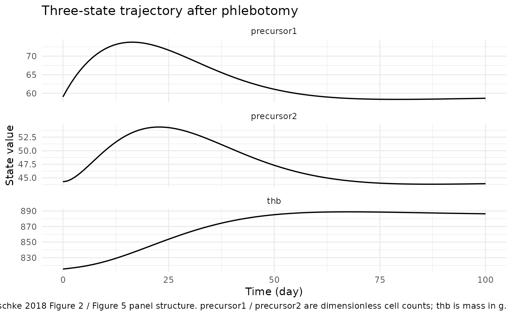
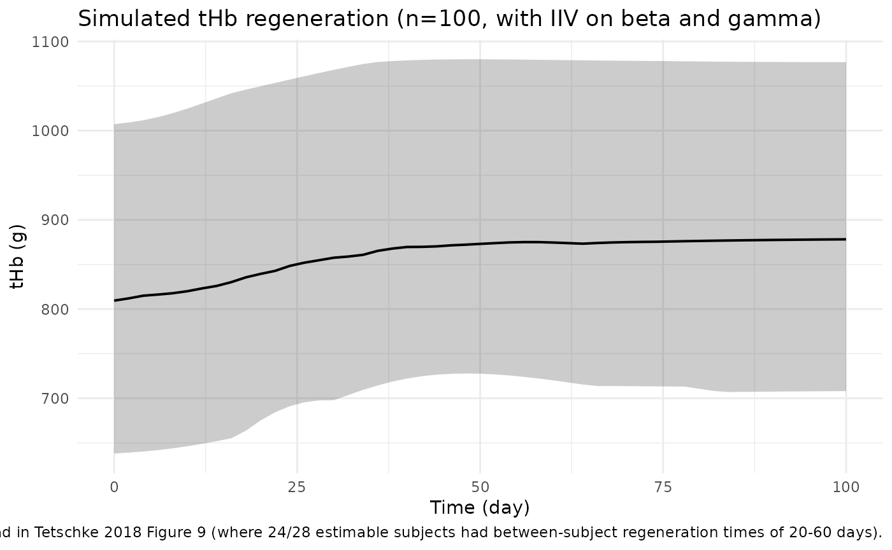
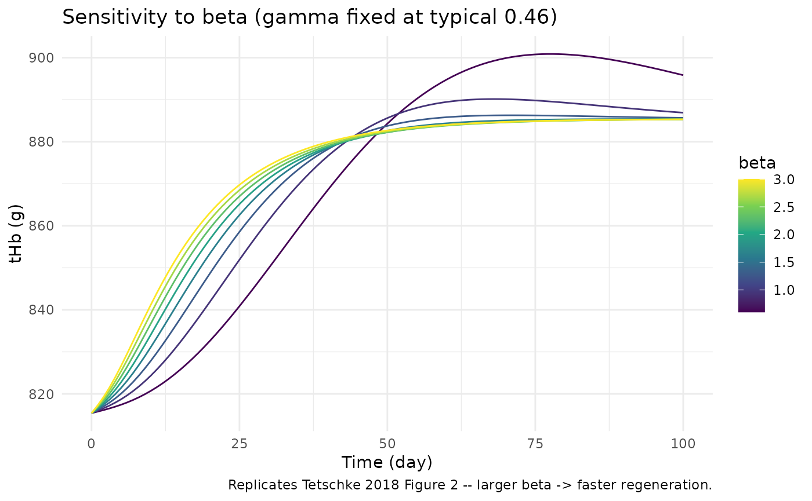
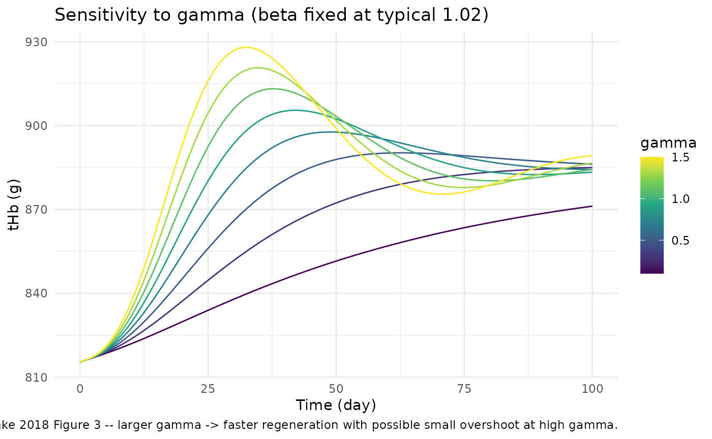

Tetschke_2018_erythropoiesis
Source:vignettes/articles/Tetschke_2018_erythropoiesis.Rmd
Tetschke_2018_erythropoiesis.RmdModel and source
- Citation: Tetschke M, Lilienthal P, Pottgiesser T, Fischer T, Schalk E, Sager S. Mathematical Modeling of Red Blood Cell Count Dynamics after Blood Loss. Processes. 2018;6(9):157. doi:10.3390/pr6090157
- Description: Three-compartment population mixed-effects model for human erythropoiesis (red blood cell regeneration after a phlebotomy / blood donation) in healthy adults
- Article: https://doi.org/10.3390/pr6090157 (open access, MDPI Processes)
This is an endogenous mechanistic model for human erythropoiesis – it
has no drug, no PK/PD output, and the perturbation of interest is a
phlebotomy (whole-blood or single-unit
erythrocyte-concentrate donation). Validation therefore follows the
endogenous-validation.md recipe (steady-state,
perturbation-recovery, mass-balance, dimensional analysis) rather than
the standard PKNCA recipe.
Population
The estimation cohort is from Pottgiesser et al. 2008 (Transfusion 48:1390): 29 healthy adult male volunteers (30 +/- 10 years, 181 +/- 7 cm, 76.6 +/- 11.2 kg) each undergoing a single 1-unit standard erythrocyte-concentrate blood donation, with total hemoglobin (tHb) measured pre-donation and at multiple time points during regeneration via the optimised CO-rebreathing method (Schmidt 2005).
Tetschke 2018 fit the model to 276 tHb observations from 29 subjects
in NONMEM 7.4 with FOCE-I, diagonal OMEGA, exponential (log-normal) IIV
on beta and gamma, and an additive residual
error model. The subject-specific Base value was held fixed per subject
from the arithmetic mean of pre-donation tHb measurements (Section 3.3).
The additive residual SD was not reported in the manuscript, so the
packaged model omits residual error – it is intended for typical-value +
IIV simulation (and for reproducing the published goodness-of-fit
behaviour) rather than for refitting against new data.
The same metadata is available programmatically:
mod_fn <- readModelDb("Tetschke_2018_erythropoiesis")
mod <- mod_fn()
str(mod$meta$population)
#> List of 9
#> $ n_subjects : num 29
#> $ n_studies : num 1
#> $ age_range : chr "30 +/- 10 years (mean +/- SD), all adult males"
#> $ weight_range : chr "76.6 +/- 11.2 kg (mean +/- SD)"
#> $ sex_female_pct: num 0
#> $ disease_state : chr "Healthy adult male volunteers undergoing a single 1-unit standard erythrocyte-concentrate blood donation"
#> $ dose_range : chr "Single 1-unit blood donation; per-subject hemoglobin loss inferred from the difference between pre-donation Bas"| __truncated__
#> $ regions : chr "Germany (Pottgiesser et al. 2008 Transfusion 48:1390 dataset)"
#> $ notes : chr "Population NLME estimation in NONMEM 7.4 FOCE-I across 276 tHb observations from 29 subjects (Tetschke 2018 Sec"| __truncated__
str(mod$meta$covariateData)
#> List of 1
#> $ THB_MASS:List of 6
#> ..$ description : chr "Subject baseline (steady-state) total hemoglobin mass in grams. Plasma-volume-independent measurement obtained "| __truncated__
#> ..$ units : chr "g"
#> ..$ type : chr "continuous"
#> ..$ reference_category: NULL
#> ..$ notes : chr "Subject-level steady-state baseline. Tetschke 2018 estimates per-subject Base from the arithmetic mean of pre-d"| __truncated__
#> ..$ source_name : chr "Base"Source trace
Per-parameter origin is recorded as in-file comments next to each
ini() entry in
inst/modeldb/endogenous/Tetschke_2018_erythropoiesis.R. The
table below collects them in one place for review.
| Equation / parameter | Value | Source location |
|---|---|---|
lbeta = log(1.02) (typical beta) |
1.02 | Tetschke 2018 Section 4.2 (population fixed effect, SE 0.151) |
lgamma = log(0.46) (typical gamma) |
0.46 | Tetschke 2018 Section 4.2 (population fixed effect, SE 0.0651) |
etalbeta ~ 0.294 (IIV variance) |
0.294 | Tetschke 2018 Section 4.2 (diagonal OMEGA, SE 0.125) |
etalgamma ~ 0.346 (IIV variance) |
0.346 | Tetschke 2018 Section 4.2 (diagonal OMEGA, SE 0.148) |
k1 = 1/8 1/day |
0.125 | Tetschke 2018 Table 1 and Assumption 12 (Section 2.2) – 8-day EPO-proliferating phase |
k2 = 1/6 1/day |
0.1667 | Tetschke 2018 Table 1 and Assumption 12 (Section 2.2) – 6-day non-EPO-proliferating phase |
alpha = 1/120 1/day |
0.00833 | Tetschke 2018 Table 1 and Assumption 12 (Section 2.2) – 120-day mature-erythrocyte lifespan |
X0 = alpha * Base |
derived | Tetschke 2018 Eq. 3 (steady-state condition; X0 = k1 * x1_bar = alpha * Base) |
Fb = gamma * (Base - x3) / Base |
n/a | Tetschke 2018 Eq. 2 |
d/dt(precursor1) = beta*(X0 - k1*x1) + Fb*x1 |
n/a | Tetschke 2018 Eq. 1, line 1 |
d/dt(precursor2) = beta*(k1*x1 - k2*x2) |
n/a | Tetschke 2018 Eq. 1, line 2 |
d/dt(thb) = beta*(k2*x2 - alpha*x3) |
n/a | Tetschke 2018 Eq. 1, line 3 |
Steady-state IC precursor1(0) = (alpha/k1)*Base
|
derived | Tetschke 2018 Eq. 3 |
Steady-state IC precursor2(0) = (alpha/k2)*Base
|
derived | Tetschke 2018 Eq. 3 |
Steady-state IC thb(0) = Base
|
n/a | Tetschke 2018 Eq. 3 |
Units table (per ODE term)
The Tetschke 2018 paper assigns units [1] (dimensionless
count) to x1 and x2, but [g] to
x3. Walking through
dx3/dt = beta*(k2*x2 - alpha*x3) in those units gives
(1/day)*[1] - (1/day)*[g], which is dimensionally mixed:
the k2*x2 term carries dimensionless count per day while
the alpha*x3 term carries grams per day. The model
reproduces the paper exactly; the apparent inconsistency is an implicit
unit-conversion convention in the source (the x2 -> x3
transition silently rescales count to mass via the unstated
mean-corpuscular-hemoglobin factor). See
references/endogenous-validation.md for the comparable
Charbonneau 2021 phenylalanine case where dimensional mixing in the
published equations is preserved verbatim by design.
| ODE term | Units (paper’s bookkeeping) | Notes |
|---|---|---|
dx1/dt = d(precursor1)/dt |
[1]/day | dimensionless count rate |
beta * X0 |
[1] * [1]/day = [1]/day | X0 = alpha*Base has units [g]/day in literal SI but is treated as count-rate per the paper’s convention |
beta * k1 * precursor1 |
[1] * (1/day) * [1] = [1]/day | OK |
Fb * precursor1 |
[1] * [1] = [1]/day | Fb is treated as fractional deviation from baseline (dimensionless), so the product carries the [1]/day rate |
dx2/dt |
[1]/day | dimensionless count rate |
beta * (k1*precursor1 - k2*precursor2) |
(1/day)[1] - (1/day)[1] = [1]/day | OK |
dx3/dt = d(thb)/dt |
[g]/day | mass rate |
beta * k2 * precursor2 |
(1/day)*[1] = [1]/day | implicit *1 g/cell rescaling at the precursor2 -> thb interface (paper convention) |
beta * alpha * thb |
(1/day)*[g] = [g]/day | OK |
Parameter table (paper vs. file)
data.frame(
parameter = c("beta", "gamma",
"IIV(beta) variance", "IIV(gamma) variance",
"k1 (1/d)", "k2 (1/d)", "alpha (1/d)",
"Base reference (g)"),
paper = c("1.02 (SE 0.151)", "0.46 (SE 0.0651)",
"0.294 (SE 0.125)", "0.346 (SE 0.148)",
"1/8 = 0.125", "1/6 = 0.1667", "1/120 = 0.00833",
"885.42 (Tetschke Table 1 example); ~870 (Pottgiesser 2008 cohort mean)"),
packaged = c(round(exp(0.01980263), 3), round(exp(-0.77652879), 3),
0.294, 0.346,
round(1/8, 3), round(1/6, 3), round(1/120, 5),
"supplied as covariate THB_MASS")
)
#> parameter
#> 1 beta
#> 2 gamma
#> 3 IIV(beta) variance
#> 4 IIV(gamma) variance
#> 5 k1 (1/d)
#> 6 k2 (1/d)
#> 7 alpha (1/d)
#> 8 Base reference (g)
#> paper
#> 1 1.02 (SE 0.151)
#> 2 0.46 (SE 0.0651)
#> 3 0.294 (SE 0.125)
#> 4 0.346 (SE 0.148)
#> 5 1/8 = 0.125
#> 6 1/6 = 0.1667
#> 7 1/120 = 0.00833
#> 8 885.42 (Tetschke Table 1 example); ~870 (Pottgiesser 2008 cohort mean)
#> packaged
#> 1 1.02
#> 2 0.46
#> 3 0.294
#> 4 0.346
#> 5 0.125
#> 6 0.167
#> 7 0.00833
#> 8 supplied as covariate THB_MASSSteady-state check
Solve the model with no perturbation (THB_MASS = 885.42,
no dose, IIV zeroed out) for 90 days. The state should remain at the
seeded baseline to numerical tolerance.
mod_typ <- mod |> rxode2::zeroRe()
#> Warning: No sigma parameters in the model
ev_ss <- data.frame(
id = 1L,
time = seq(0, 90, by = 1),
amt = 0,
evid = 0,
cmt = "thb",
THB_MASS = 885.42
)
sim_ss <- rxode2::rxSolve(mod_typ, events = ev_ss, returnType = "data.frame")
#> ℹ omega/sigma items treated as zero: 'etalbeta', 'etalgamma'
range(sim_ss$thb)
#> [1] 885.42 885.42
range(sim_ss$precursor1)
#> [1] 59.028 59.028
range(sim_ss$precursor2)
#> [1] 44.271 44.271Perturbation-recovery (Tetschke 2018 Figure 5 / Figure 7 behaviour)
A single phlebotomy is encoded as a negative bolus on the
thb compartment. The amount removed is set so that the
post-donation tHb matches the 1-unit-erythrocyte-concentrate scale
typical for a German blood-donation center – approximately 70 g of
hemoglobin (Pottgiesser 2008 reports a per-unit loss of ~7 – 8 % of
pre-donation tHb, i.e. ~60 – 70 g for a typical 870 g baseline).
phleb_amt <- -70 # g hemoglobin removed in a 1-unit donation
ev_phleb <- rbind(
data.frame(id = 1L, time = 0, amt = phleb_amt, evid = 1L, cmt = "thb",
THB_MASS = 885.42),
data.frame(id = 1L, time = seq(0, 100, by = 1), amt = 0, evid = 0L, cmt = "thb",
THB_MASS = 885.42)
)
sim_typ <- rxode2::rxSolve(mod_typ, events = ev_phleb, returnType = "data.frame")
#> ℹ omega/sigma items treated as zero: 'etalbeta', 'etalgamma'
ggplot(sim_typ, aes(time, thb)) +
geom_line(linewidth = 0.7) +
geom_hline(yintercept = 885.42, linetype = "dashed", colour = "grey40") +
labs(x = "Time (day)", y = "tHb (g)",
title = "Typical-value recovery of tHb after a single 1-unit phlebotomy",
caption = "Replicates the regeneration shape of Tetschke 2018 Figure 7 (recovery to Base in ~60-70 days at typical beta = 1.02, gamma = 0.46).") +
theme_minimal()
sim_typ |>
select(time, precursor1, precursor2, thb) |>
pivot_longer(c(precursor1, precursor2, thb), names_to = "state", values_to = "value") |>
ggplot(aes(time, value)) +
geom_line(linewidth = 0.6) +
facet_wrap(~ state, scales = "free_y", ncol = 1) +
labs(x = "Time (day)", y = "State value",
title = "Three-state trajectory after phlebotomy",
caption = "Replicates Tetschke 2018 Figure 2 / Figure 5 panel structure. precursor1 / precursor2 are dimensionless cell counts; thb is mass in g.") +
theme_minimal()
The trajectory matches the paper’s qualitative findings:
thb drops by the phlebotomy amount, precursor1
and precursor2 are amplified by the
positive-Fb feedback term during the deficit, and
thb returns to baseline over ~60 – 70 days (compare
Tetschke 2018 Figure 5, where regeneration to Base takes ~65 days at
beta = 1, gamma = 0.5*beta).
Population variability (Monte Carlo with IIV)
Reproduce the spread of regeneration trajectories that motivates the inter-individual variability reported in Tetschke 2018 Section 4.2.
set.seed(20180905L)
n_sub <- 100L
baseline_thb <- rnorm(n_sub, mean = 870, sd = 100)
ev_pop <- do.call(rbind, lapply(seq_len(n_sub), function(i) {
rbind(
data.frame(id = i, time = 0, amt = phleb_amt, evid = 1L, cmt = "thb",
THB_MASS = baseline_thb[i]),
data.frame(id = i, time = seq(0, 100, by = 2), amt = 0, evid = 0L, cmt = "thb",
THB_MASS = baseline_thb[i])
)
}))
sim_pop <- rxode2::rxSolve(mod, events = ev_pop, returnType = "data.frame")
vpc_summary <- sim_pop |>
group_by(time) |>
summarise(
Q05 = quantile(thb, 0.05, na.rm = TRUE),
Q50 = quantile(thb, 0.50, na.rm = TRUE),
Q95 = quantile(thb, 0.95, na.rm = TRUE),
.groups = "drop"
)
ggplot(vpc_summary, aes(time, Q50)) +
geom_ribbon(aes(ymin = Q05, ymax = Q95), alpha = 0.25) +
geom_line(linewidth = 0.7) +
labs(x = "Time (day)", y = "tHb (g)",
title = "Simulated tHb regeneration (n=100, with IIV on beta and gamma)",
caption = "Median +/- 5/95th percentile band. Reproduces the cross-subject regeneration spread in Tetschke 2018 Figure 9 (where 24/28 estimable subjects had between-subject regeneration times of 20-60 days).") +
theme_minimal()
Sensitivity analysis (replicates Tetschke 2018 Figure 2 and Figure 3)
The paper’s Figures 2 and 3 are Monte-Carlo plots showing how varying
beta (holding gamma fixed) and
gamma (holding beta fixed) shape the
regeneration trajectory. Reproduce the same sensitivity here using a
typical Base = 885.42:
ev_one <- function(THB_MASS) {
rbind(
data.frame(id = 1L, time = 0, amt = phleb_amt, evid = 1L, cmt = "thb",
THB_MASS = THB_MASS),
data.frame(id = 1L, time = seq(0, 100, by = 1), amt = 0, evid = 0L, cmt = "thb",
THB_MASS = THB_MASS)
)
}
beta_grid <- seq(0.6, 3.0, length.out = 8)
sens_beta <- do.call(rbind, lapply(beta_grid, function(b) {
mod_b <- mod_typ |>
rxode2::ini(lbeta = log(b))
s <- rxode2::rxSolve(mod_b, events = ev_one(885.42), returnType = "data.frame")
s$beta_set <- b
s
}))
#> ℹ change initial estimate of `lbeta` to `-0.510825623765991`
#> ℹ omega/sigma items treated as zero: 'etalbeta', 'etalgamma'
#> ℹ change initial estimate of `lbeta` to `-0.0588405000229335`
#> ℹ omega/sigma items treated as zero: 'etalbeta', 'etalgamma'
#> ℹ change initial estimate of `lbeta` to `0.251314428280906`
#> ℹ omega/sigma items treated as zero: 'etalbeta', 'etalgamma'
#> ℹ change initial estimate of `lbeta` to `0.487703206345136`
#> ℹ omega/sigma items treated as zero: 'etalbeta', 'etalgamma'
#> ℹ change initial estimate of `lbeta` to `0.678758443107846`
#> ℹ omega/sigma items treated as zero: 'etalbeta', 'etalgamma'
#> ℹ change initial estimate of `lbeta` to `0.839101093183025`
#> ℹ omega/sigma items treated as zero: 'etalbeta', 'etalgamma'
#> ℹ change initial estimate of `lbeta` to `0.977251431663842`
#> ℹ omega/sigma items treated as zero: 'etalbeta', 'etalgamma'
#> ℹ change initial estimate of `lbeta` to `1.09861228866811`
#> ℹ omega/sigma items treated as zero: 'etalbeta', 'etalgamma'
ggplot(sens_beta, aes(time, thb, group = beta_set, colour = beta_set)) +
geom_line() +
scale_colour_viridis_c(name = "beta") +
labs(x = "Time (day)", y = "tHb (g)",
title = "Sensitivity to beta (gamma fixed at typical 0.46)",
caption = "Replicates Tetschke 2018 Figure 2 -- larger beta -> faster regeneration.") +
theme_minimal()
gamma_grid <- seq(0.1, 1.5, length.out = 8)
sens_gamma <- do.call(rbind, lapply(gamma_grid, function(g) {
mod_g <- mod_typ |>
rxode2::ini(lgamma = log(g))
s <- rxode2::rxSolve(mod_g, events = ev_one(885.42), returnType = "data.frame")
s$gamma_set <- g
s
}))
#> ℹ change initial estimate of `lgamma` to `-2.30258509299405`
#> ℹ omega/sigma items treated as zero: 'etalbeta', 'etalgamma'
#> ℹ change initial estimate of `lgamma` to `-1.20397280432594`
#> ℹ omega/sigma items treated as zero: 'etalbeta', 'etalgamma'
#> ℹ change initial estimate of `lgamma` to `-0.693147180559945`
#> ℹ omega/sigma items treated as zero: 'etalbeta', 'etalgamma'
#> ℹ change initial estimate of `lgamma` to `-0.356674943938732`
#> ℹ omega/sigma items treated as zero: 'etalbeta', 'etalgamma'
#> ℹ change initial estimate of `lgamma` to `-0.105360515657826`
#> ℹ omega/sigma items treated as zero: 'etalbeta', 'etalgamma'
#> ℹ change initial estimate of `lgamma` to `0.0953101798043247`
#> ℹ omega/sigma items treated as zero: 'etalbeta', 'etalgamma'
#> ℹ change initial estimate of `lgamma` to `0.262364264467491`
#> ℹ omega/sigma items treated as zero: 'etalbeta', 'etalgamma'
#> ℹ change initial estimate of `lgamma` to `0.405465108108164`
#> ℹ omega/sigma items treated as zero: 'etalbeta', 'etalgamma'
ggplot(sens_gamma, aes(time, thb, group = gamma_set, colour = gamma_set)) +
geom_line() +
scale_colour_viridis_c(name = "gamma") +
labs(x = "Time (day)", y = "tHb (g)",
title = "Sensitivity to gamma (beta fixed at typical 1.02)",
caption = "Replicates Tetschke 2018 Figure 3 -- larger gamma -> faster regeneration with possible small overshoot at high gamma.") +
theme_minimal()
Mass-balance / flux check (algebraic)
At steady state with Fb = 0 and the seeded initial
conditions, every ODE right-hand side should evaluate to zero. Verify
symbolically with the example values from Tetschke 2018 Table 1.
Base <- 885.42
beta <- 1.02
gamma <- 0.46
k1 <- 1 / 8
k2 <- 1 / 6
alpha <- 1 / 120
x1_bar <- alpha / k1 * Base
x2_bar <- alpha / k2 * Base
x3_bar <- Base
X0 <- alpha * Base
Fb_bar <- gamma * (Base - x3_bar) / Base
c(
x1_bar = x1_bar, x2_bar = x2_bar, x3_bar = x3_bar,
X0 = X0, Fb_bar = Fb_bar
)
#> x1_bar x2_bar x3_bar X0 Fb_bar
#> 59.0280 44.2710 885.4200 7.3785 0.0000
dx1 <- beta * (X0 - k1 * x1_bar) + Fb_bar * x1_bar
dx2 <- beta * (k1 * x1_bar - k2 * x2_bar)
dx3 <- beta * (k2 * x2_bar - alpha * x3_bar)
c(dx1 = dx1, dx2 = dx2, dx3 = dx3)
#> dx1 dx2 dx3
#> 0 0 0
stopifnot(abs(dx1) < 1e-9, abs(dx2) < 1e-9, abs(dx3) < 1e-9)The reported x1_bar = 59.03,
x2_bar = 44.27, X0 = 7.3785 reproduce Tetschke
2018 Table 1 exactly.
Assumptions and deviations
-
Compartment naming deviation –
thb. The third compartment in this model carries total hemoglobin mass in grams. The canonical nlmixr2lib compartment list (depot,central,peripheral1, …) does not include a hemoglobin-mass compartment, so this model uses the paper-faithful namethb. The companion progenitor states use the canonical chain prefixprecursor<n>. Documented as a known convention warning emitted bycheckModelConventions("Tetschke_2018_erythropoiesis"). -
THB_MASSis a newly registered canonical covariate for total hemoglobin mass (grams) measured by the optimised CO-rebreathing method (Schmidt 2005). It is distinct from the existingHGB(mass concentration in g/L or g/dL) andHCT(volume fraction) – seeinst/references/covariate-columns.md. - No residual error model. Tetschke 2018 reports an additive residual error model was used in NONMEM but does not publish the additive SD. The packaged model therefore omits residual error and is intended for typical-value + IIV simulation rather than refitting against new data.
-
Source-paper dimensional inconsistency in Eq. 1.
Table 1 lists
x1andx2as dimensionless[1]andx3as[g]. The transition ratek2*x2in thedx3/dtline therefore has units[1]/daywhile the decay termalpha*x3has units[g]/day. The packaged model reproduces the paper’s equations verbatim; the implicit count -> mass rescaling at the precursor2 -> thb interface is part of the paper’s convention. See the units table above and the comparable Charbonneau 2021 phenylalanine case documented inreferences/endogenous-validation.md. -
Phlebotomy is encoded as a negative bolus on
thb. The control variableu(t)and rate functionP(beta, dt, dx3)in Tetschke 2018 Eq. 5 and Appendix A.1 are an internal convenience for the paper’s NONMEM implementation; the paper itself notes (Section 2.3) that the same numerical results can be reproduced by setting the post-donationthbvalue as the simulation start point. The negative-bolus formulation is the natural rxode2 / nlmixr2 idiom and is functionally equivalent. -
Typical-cohort baseline
THB_MASS = 885.42 g(Table 1 example). This is the per-Subject example from Table 1 of the paper. The Pottgiesser 2008 cohort spans roughly 612 – 1555 g (Table A2). For pediatric, female, hematology-disordered, or non-Pottgiesser populations the user must supply a population-appropriateTHB_MASSvalue. -
Subject-level Base treated as a covariate. Tetschke
2018 holds Base fixed per subject in the population NLME (Section 4.2)
and only attempts to estimate Base directly in Section 4.4 (where it has
identifiability problems). The packaged model therefore exposes
THB_MASSas a covariate to be supplied by the user rather than as an estimated parameter. - Cohort generalisability. The Pottgiesser 2008 dataset is exclusively adult males. Female and pediatric subjects have systematically lower tHb mass (a typical adult female has ~600 g vs ~870 g in adult males); pre-pubertal children have ~250 – 500 g depending on age and weight. The mechanism (beta, gamma, k1, k2, alpha) is expected to extrapolate qualitatively but no quantitative cross-cohort validation is in the paper. The Outlook (Section 5) explicitly flags polycythemia vera and pathological cases as out-of-scope for the published parameter set.